One of the most unfortunate assumptions a novice homesteader makes is that bricklaying is a snap. I know of many an inexperienced bricklayer who has envisioned a beautiful, uniform, and eternal face of brick, only to finish with a faulty shifting wall that soon becomes a pile of rubble. While easily learned with a modicum of study and forethought, laying brick is both an art and a responsibility.
It's best at first to not get overly technical about the many selections of brick and their individual classifications, so let's deal with a term you probably have heard of before: face brick. There are three basic parts to recognize. They are called the face or front, the top or bottom, and the ends (figure 1). Depending on how the brick is going to be used, each of the three parts of the brick can be laid in two positions. The illustrations below show the six basic bricklaying positions.
The pattern that brick is laid in is actually called the "Bond." We are going to lay our brick in a pattern called
running bond (also referred to as half bond). Figure 8 shows a wall laid up in running bond.
Each row of brick is called a "course" and walls are usually the result of a duplication of two courses, the first (or layout) course and the alternate course. The alternate courses will have half bricks on the ends.
The folks at the masonry supply yard can advise you on the type of brick to be used on your project. Standard brick will cost approximately 30 cents to 45 cents each, depending upon what you select and where you live.
These prices probably shock you, as they still do me. Keeping a tight control on the amount of brick necessary for a specific project is your only hedge against waste, and, thankfully, the math involved is very simple.
There are seven standard-sized brick in one square foot. Multiply the length of your project by the height to get the number of square feet, then multiply this by seven. For example: If your project is going to be 15' long and 8' high you will need 840 bricks.
15' long x 8' high =120 square feet
120 square feet x 7 = 840 bricks
Now that you know how to select the number of brick that you need, we have to look at the other key material you need to lay the brick: the mortar. Mortar is made from masonry cement (a combination of Portland cement and hydrated mason's lime), fine mason sand (also known as fine aggregate), and clean water. The ratio is three parts sand to one part masonry cement and enough water to make a consistency very much like that of soft custard. When large quantities of brick are going to be used, the mason orders masonry cement in 70-pound bags, and sand by the ton or cubic yard.
Purchased this way, the masonry cement costs about $6.70 a bag and the sand costs approximately $26 per cubic yard or about $18 per ton. Depending on where you live, these prices can fluctuate. For smaller projects (300 bricks or less), I would suggest buying premixed mortar, which has the cementious materials and sand already mixed together in one bag. All you have to do is add water.
When a quantity of mortar is made, it is called a "batch." A 70-pound bag of masonry cement (by volume I cubic foot) requires 3 cubic feet of sand (16 rounded shovelfuls) and depending on the dampness of the sand, 4 1/2 to 6 gallons of water.
If you are using a mechanical mixer, put the water in first, then half the sand, then all of the masonry cement, and finally the other half of the sand (and additional water if needed). If the mixture is too wet, add additional amounts of dry ingredients in the proper ratio (3:1). If the mixture is too dry, simply add more water. Completing the recipe above for a 70-pound bag of cement will yield one "bag batch" (4 cubic feet of mortar). One bag batch is enough to lay 135 standard-sized bricks. A bag of premixed mortar is about I cubic foot and will lay about 34 bricks.
To determine how much mortar ingredients to order for a large project, use the following steps.
1) Divide the number of brick needed by 135. This will tell you how many bags of cement you will need.
2) Multiply the number of bags needed by three. The product equals how many cubic feet of sand the project will require.
3) Divide the product in step two by 27 (the number of cubic feet in one cubic yard). This figure will indicate the number of cubic yards of sand. Fine masonry sand is usually sold by the cubic yard. if the sand supplier sells it by the ton, he will make die conversion for you.
4) 4 1/2 to 6 gallons of water per hatch will be needed to mix the mortar.
For smaller projects, and if you plan to use premixed mortar, use the first three steps indicated above. (In step one, use 34, the number of standard-sized brick that can be laid with one bag of premixed mortar.)
A brick wall is usually built in front of another wall. it is properly referred to as a "brick veneer" wall. The space between the two walls is called a cavity and is usually anywhere from 1" to 2". Special job circumstances could make these dimensions vary. Because a brick veneer wall is not very wide (standard sized brick vary in width from 3 1/4" to 4"), it is necessary to use some form of brick cavity tie to secure the two walls together. There are several different gadgets available to do this and the one that I have selected is known as a corrugated wall tie. It is a galvanized, corrugated piece of thin metal about 8" long, 1" wide and about as thick as a greeting card. If the backup wall already exists, such as the exterior of a house or even one or more of the interior walls of a house, you should fasten the wall ties to the backup wall every 16" horizontally and every 16" vertically. This would be about one corrugated wall tie for every two square feet of wall space to be brick veneered.
Wall ties are inexpensive, costing about $6.50 for a box of 100. For the exterior walls of a house, you should cover the inner wall surface with a waterproof tar felt paper fast. Then snap chalk lines every 16" in height and then mark each 16" horizontally with a piece of bright colored chalk.
The wall ties have predrilled holes in them. Using 1" - Long roofing nails, secure the ties to the wall so that the center of the tie is about a 1/2" below the snapped chalk lines. Stagger the rows of ties so that each course is not directly over the course below.
If the veneer wall is going to be placed in front of a masonry wall that was built before the brick veneer, the mason who originally built the masonry wall would have placed the wall ties in between the courses of backup masonry every 16" both horizontally and vertically as illustrated below. The ties should stick out about 4" and should be bent down for safety reasons.
Bricklaying trowe- Wide Heel London, 9 1/2" long with plastic handle - cost: about $32 Pointing trowel - 5" long and 2 1/2" wide, wood handle with a ferrule - cost: about $9
6' mason's modular spacing rule- cost: about $17
Tempered convex- shaped 5/8" x 3/4 jointer - cost about $8
4"-wide brick set- cost: about $9.50
24-ounce brick hammer - cost: about $16 to $45, depending upon whether it has a wooden or unbreakable handle
Mason's braided nylon line - cost: $7 to $20, depending upon the length you purchase
Items used to secure a mason 's line- two line blocks, two tapered line pins, and two line twigs-cost: less than $10 for all. Some masonry supply yards may just give you these items.
All-purpose masonry brush - cost: about $7
Combination wire brush and scraper- cost: about $5
One 2' and one 41 level - cost: $55 for a two-footer and $75 or more for a four-footer. I would recommend shopping around. For masonry work, it is best to stay away from aluminum levels and use some form of wooden level. They hold up better and are easier to maintain and keep clean.
The above 11 items represent the basic tool needs for bricklaying. Professionals use a few more but for now the basics will do just fine (our ideal list is shown as illustrations at the bottom of these pages). Once the tool set is complete, you'll need a few pieces of equipment to finish the list. As with the tools indicated above, the equipment can be used for all categories of masonry.
Wheelbarrow - cost: anywhere from $5 at a yard sale to $50 in stores. You will use this to transport mortar and other materials to your job site and to make mortar in the barrow.
Mortar pans ormortarboards - cost: about $35 for pans and $23 for boards. The pans are about 30" square and about 7" deep and are made from either plastic or steel. The boards are also about 30" square and flat and are made from fiberglass or polyethylene.
Stands to support your mortar pans or boards - cost: about $35 each. Substitutes include anything you can improvise that would be about 16" high and big enough to safely support your mortar pan. Stands are necessary to keep the mortar up high enough so that you can comfortably reach it with your bricklaying trowel. Some masons use a couple of building blocks for a stand and others like to use plastic dairy crates.
Long-handled shovels need two and they'll cost from $6 to $20 each. One will be used to place the dry ingredients used to make mortar into whatever you are making mortar in; the other will be used to place the wet prepared mortar onto the mortar pans. Never use a shovel stained with wet mortar to handle any of the dry ingredients.
Long-handled hoe - cost: as much as $30 for a professional model to as little as $7 for a garden-variety purchased at any hardware store. If you are going to be doing a lot of mortar mixing, I recommend the professional mixing hoe with the two holes in the blade. It allows the mud to mix quicker and it is not as hard on your back.
(Optional) Two brick tong - cost: about $20 each. These are adjustable packs that can carry six to 11 standard sized bricks. I like to set them to carry seven. just place them over the brick you want to move and pick up with the handle. When you reach the spot where you want them stacked, set the tong full of brick down, let the handle relax and pick the tongs Lip by the shaft, holding the ends and the handle in the relaxed position.
Rubber pails - you'll need two.
Pencils, marking crayons (called keels by the pros), and a good chalk line for snapping lines will complete a basic list. You're finally prepared to make the monument to your ambition that you've always dreamed of.
For small jobs you can buy dry mortar mix in 25, 40-, or 85-pound bags for a nickel or less a pound; just add water according to the directions on the bag. Dry mortar is caustic stuff. Wear goggles and gloves all through the mixing process. Cheaper, more satisfying, and more tradesman-like is to mix your own. You'll need an equal number of 50-pound or 80-pound sacks of Portland cement and hydrated mason's lime (not the lime you put on the garden) and two or three times as much fine clean sand as lime or cement. You also need clean water-half as much (by weight) as Portland cement. A pint of water weighs a pound. So you'll want 25 pints or 6 1/4 gallons of water for each 50-pound sack of cement. For a practice mortar that builds like the real thing, but won't set up, leave out the Portland cement; combine one part hydrated lime and three parts sand with enough water to make a lovely buttery mix. You can practice, then tear down your wall. Hose off the brick and discard the practice mortar.
For the real thing, use a wheelbarrow as a mixing vessel. Put six well-rounded shovels of sand and two well-rounded shovels of masonry cement in the barrow and dry mix very thoroughly With a hoe. Pull this mass to one end and pour about 2 gallons of water into the other end of the barrow. Slowly pull and mix the dry mass into the water with the hoe. The exact amount of water required will vary slightly, and it may take two or three batches to get the perfect consistency. if the mortar is too dry, it will be unspreadable; if too wet, it will run and not hold its shape well on the trowel.
Now it is time to learn how to spread mortar and make a brick bed (mortar spread out and prepared to receive brick). Grasp the trowel by its handle keeping your thumb on top, and work it through the mortar.
Develop a feel for the trowel and mortar by trying to pick up the mortar with the side of the blade and the heel. A bricklaying trowel is like an extension of a mason's arm and is seldom put down when he is working. When laying brick, lie will pick up a brick With one hand and a trowel full of mortar with the other hand, Get a good bit of mortar (masons often refer to it as "mud") on the full side of the blade (left side if you are right handed and right side if you are left handed).
If you are right handed, approach the left end of the work (vice versa if YOU are left handed), lower the trowel to about 4" above the target, rotate your wrist slightly and apply the mortar by snapping it off the left side of Your trowel in two to three movements, moving ahead with each snap and lightly overlapping each snap of mud. When you become proficient doing this, you will be able to throw down about 16" to 20" of mortar bed from one trowel full of mud.
As you take mortar from the mortar pan with your trowel, tap the bottom of the trowel firmly against the pan. This will make the mud settle and stay on the trowel as you prepare to make the bed.
When properly shaped, a bed will be about about 5/8" to 3/4" thick when wet, and will compress to about 3/8" thick when dry. Spread the mortar by gliding the trowel from left to right a few times to ensure a uniform thickness. A skilled mason does this fluidly and automatically, but it will feel awkward to a novice. You may want to invest a couple of hours practicing bed preparation before advancing to laying the bricks themselves.
Putting mortar on the head of the brick (making a "head joint") is the last step to learn before laying. The mortar should retain the same thickness listed above, should be applied neatly without smearing the face, and should be smooth and compact enough so that the mortar joint doesn't fall off. Note in figure 12 how the mason is holding the brick: thumb on face and palm over the top. You will use the toe and a little of the blade to hold enough mud for this operation. Use four movements to apply the mortar.
1) Pick up mud, using part of trowel designated.
2) Slide mud on end of brick with downward stroke.
3) Use top of trowel toe and push mud more firmly in place.
4) Make sure face of mortar joint is not angled in too much (see figure 11).
It will be necessary for you to be able to make a head joint on both ends of the brick. The four steps outlined above are directed toward the right end of the brick. In order to make mortar joints on the left end of the brick, you still grab the brick the same way, but you roll the brick a quarter turn upward. For the tight-ended joint, you use pull strokes; and for the left ended joint, you use push strokes.
Now let's act like a mason. Observe that one side of your mason's rule has inches and feet like a regular rule and the other side has six different scales, numbered 2, 3, 4, 5, 6, and 8. These are used for six different sizes of masonry units. Each scale is the same as the number of courses in 16" of height. For standard sized brick, you would use the #6 scale six courses in 16" of height. (Each course of standard-sized brick and mortar measures approximately 2 11/16".)
Do your best to keep your work as plumb as possible. This means keeping your work accurate vertically by using the plumb bubbles on your level. There are two level bubbles and four plumbing levels. One set of each is upside down so that no matter how you grab the level, it is always ready to use. in plumbing terminology, if your work leans toward you it is called "hard" and if it leans away it is called "slack."
The next step is to make a building point. Determine where the wall is to begin, and make a mark. This will be the starting point of your wall. Next, make a dry layout. Take one of your bricks (decide which is the best face) and place it so that the left end of the brick is right over the building point. Use a piece of wood, metal, or almost anything that is 3/8" wide as a spacer to approximate the width of the mortar joints. I like to use a piece of wood approximately 3/8 x 1" x 6" long. Place it against the end of the brick you have just positioned and lay another brick against the spacer. Make a pencil mark at the end of the last brick. Remove this brick and then make a building point Using your pencil over the mark you just made so that it looks like the one at the beginning of your dry layout. Replace the last brick, making sure the right end is over the building point you just made. Caution: do not ram the brick as you are making the dry layout or you will gradually change the location of the previously placed brick. Be gentle and use a minimum of pressure as you place the brick down for the dry layout.
We call the next step "spotting" the first and last brick. This is done by following these steps.
1) Pick up the first brick and place enough mortar down to lay it. Do not cover up the building point. Keep the mortar away from it.
2) Push down on the brick and lightly tap it with the heel of your trowel. Cut the extruded mud with the blade of your trowel and throw it back into your mortar pan.
3) Place your 2' level on top of the brick (lengthwise); make it level by tapping the appropriate end with the heel of your trowel.
4) Place the bottom of your level on the face of the brick and make it plumb by tapping either the top front or top back of the brick with your trowel.
5) Check it for height, using your modular rule. Use scale #6. There are six courses of standard-sized brick in a height of 16". if it is too low, raise it. (Repeat steps two, three, and four if necessary.) If too high, tap it down.
6) Do the same thing with the last brick.
7) Range the two spotted (end) brick with each other.
You will need a line to do this ranging. Figure 14 shows how to secure a line block to one end of the line and figure 15 shows the extended line. You will tap the brick in or out very lightly with your trowel so that the leading edge of the brick is back from the line just a fragment (about 1/32"). This ranging will be accomplished by anchoring the line as indicated in figure 15 and lightly tapping the ends of the brick in or out so that they are in alignment with each other.
The first and last brick have been laid. The rest of the brick are sitting as a dry layout. The line is up and now we are ready to lay the unlaid brick to die line. Time for a new word-"arris" (sounds like "air iss"). An arris is an edge where two Surfaces meet (see figure 16).
Push down on the back arris of the first brick to be laid with the four fingers of your hand. The brick will roll LIP. Put your thumb on the face. Keep the brick in your hand and get enough mud on your trowel to make a mortar joint on the end of the brick (this is called a head joint). Rotate the brick so that the left end is LIP. Use the tip of your trowel and put the mortar joint on the end of the brick. Place the brick in the spot it came from. Make the mortar joint the same size as the space you are leaving for the next joint. Do this gently so that you do not move the brick you are placing the brick against. Make the top arris even with the line and keep the brick back from the line about 1/32" Whenever you are laying any units of masonry to a line, never lay the unit so that it touches the line. If you do, you will get what we call accumulated error, which occurs when the brick start to push the line outward, resulting in a how in the wall.
The last brick to be laid in each course is called the "closure." To lay this unit, put a regular head joint on the closure brick and use the tip of your trowel to plaster a joint on the brick that will have the closure laid next to it. If necessary, after the closure has been laid, pack the joint full using the tip of your trowel. Hopefully, you were accurate and all of the head joints look to be the same size. The next step is to join the vertical joints and also the bed joint. Use the large end of your 5/8" x 3/4" jointer and compress all of the mortar joints by pushing and pulling down for the verticals and pushing and pulling across for the horizontal bed joint. Use up-and-down and back-and-forth motions for the jointing. Some brick are extremely absorbent and a mason can only lay two or three before lie has to stop and joint, Other brick can be jointed an hour or even two after they have been laid. If you have used concrete brick units, they can be jointed a half hour or more before the mortar sets too hard to joint. As you are jointing, you may notice unfilled spots, or voids, in some of your mortar joints. To fill them in, get a small quantity of mortar on your trowel and hold it vertically (tip of blade up). Grasp one end of your jointer and lay the tip of the other end into the mortar on your trowel. A small quantity of mortar will adhere to the jointer and you simply pack it into the void. Repeat as often as necessary. You have now successfully laid the layout course and are waiting for the next step. This will be to build a lead on each end of the wall.
The purpose of the leads is to serve as a guide for the rest of the wall and to give you a place to set your line. Figure 17 shows a layout course and a lead on each end.
We'll start off by first laying the brick designated as brick #1 in figure 17. In this case, it will be a half brick. To make your half brick, mark the center of the brick on the face and place the cutting edge of your brickset on the mark. Hit the other end of the brickset with your hammer. If the brick has not broken, turn the brick a quarter turn and use your hammer and brickset to complete the cut on the top or bottom of the brick. For this type of lead, we will not be too concerned about the appearance of the cut edge because it will face the back of the wall. A professional mason would cup the brick in one hand and give the center of the brick one good sharp rap with the head of his mason hammer, as opposed to the chisel-shaped end called the "scutch." This unit will have to be level, plumb on the end, and plumb on the face. it must also be the right height, which would be the second #6 on your modular rule. it must also range with the layout course. You may have to relay the brick two or three times before you are willing to accept whatever degree of accuracy you have set as your standard. These steps will apply to the first unit of each course of the lead you build.
1) Put down enough mortar to lay the first unit and lay the unit.
2) Push down on the unit and cut off the extruded mortar until it looks to be about the way it should be.
3) Place your level on top and make the unit level with the existing wall.
4) Place your level on the end of the unit vertically and make the unit plumb with the layout course.
5) Place your level vertically on the end of the face and make the unit plumb with the layout course.
6) Hold the top of your level against the face of the first unit in a downward diagonal manner and make sure that the first unit is in alignment with the wall by tapping the right end of the brick in or out as the need indicates. (You will be using your level as a straight edge.)
The next step will be to lay the rest of the brick in the first course of your lead.
1) The first course of your lead will be three-and-one-half bricks long. You have already laid the first unit, so now we need enough mud to lay three brick (about 24"). Throw this mud down and make your bed as previously instructed.
2) Lay these three brick, making propersized head joints. (The leading vertical arris should be back one-half of a mortar joint thickness from the center of the brick it is over. This is perfect half bond. Cut the extruded mortar as you lay them, and make them look right.
3) Place your 2' level on top and make these three units level with the first unit.
4) Place your level vertically on the end of the last unit and make it plumb with the layout course.
5) Place the top of your level against the faces of the brick in the second course of your lead and use the level as a straight edge to range the brick. Caution: do not move the right end of the last brick nor the left end of the half brick. if you do, you may have to replumb. Continue to the next course of your lead. This lead is known as a jamb lead. Each course of your lead will be a half brick shorter than the course below (this is called racking back). A lead is usually six courses high and ends with a half brick.
You will now have to joint your lead. This does four things. One, it helps to strengthen the wall. Two, it gives the wall a very pleasing appearance. Three, it helps to make the joints waterproof. And finally, it gives them a smooth finish.
1) Start off with the large end of your jointer and do all of the vertical. joints first, using the end of this tool which is convex shaped; you will make concave joints.
2) Do all of the horizontal joints next, using the long part of your jointer. (Don't forget to fill in any voids as previously instructed.)
3) Use the edge of your trowel blade and cut off any mortar burrs that may have formed as you were jointing.
4) Use your soft brush to brush the face of your wall.
5) Do all of the joints a second time, using the heel of the smaller end. Pay particular attention to the spots where the vertical joints meet the horizontal joints. This is called polishing and mitering.
I want to emphasize that you may have to joint more often if you are working in very dry conditions or if you are working with very absorbent brick that need to be jointed after only laying a few units. Common red clay bricks are very absorbent and may have to be watered down before they are laid. The five steps listed will result in a first-rate jointing job. After you have repeated this process to build the lead at the other end of the wall, you will be ready to lay the rest of the courses.
You will now notice that some of the manipulations will be a little different because you will be working from right to left. (The first lead had you working from left to right.) After completing this lead, you will be ready to secure the line with your line blocks to both ends of the wall. Figure 15 shows a line block securing the line on both ends of a wall.
Here's how to do it. Secure the line to the line block by wrapping it around the center of the line block about three times. Next, bring the line around to the wider part of the line block and guide it through the slotted groove. Place the end of the line block on the left end of the wall so that the line is even with the top of the first course in your lead (sort of like a pistol pointing to the right end). Now the tricky part: keep tension on the line and walk to the other end of the wall, letting the line slip through your fingers. Relax your grip and the line block will fall to the floor. When you get to the right end, increase the tension and slide your finger to the end of the lead. Pinch the string with your thumb and index fin ger. This pinch on the line shows you where the shoulder of the line block should be in relation to the extreme right end of the lead.
Place the pinch at the shoulder of the .line block, let the line go through the slotted groove, and finish securing it as you did on the other end. With both line blocks securing the line even with the top of the course you are going to lay, kneel down and sight the top of the line. If you see a sag in the line, you will have to increase the taughtness of the line or you will end up with a sag in your course. Be careful. If you pull too hard you might pull the lead over.
Now your line is up, and you are ready to lay brick. As you complete each course, go to the ends of the project and slide the line blocks up to the next course. Try jointing each course as you complete it. If it is too wet, lay one or two more courses and then joint. You can tell when the joints are too wet by observing that water may come to the surface (masons call this "weeping"). When you come to the last course, place a brick (dry) on each end. This gives the upper part of the line block shoulder something to rest against. You have now completed your wall. Congratulations! If you wish, you may want to add additional courses to your project, just follow all of the previously outlined steps.
For those of you who might be doing this in colder climates, you have to protect your work from freezing. Here are some guidelines for you to follow.
1) Only lay brick when the temperature is at least 35'F and rising.
2) As long as the brick wall is at least four hours old and the temperature is not going to go below 28°F, the work will be safe.
If the temperature is going to plummet below this temperature, you will have to do some serious insulation. There are a few ways to do this: (a) cover the walls with blankets; (b) place a heater so that the heat circulates all around the wall; (c) cover the walls with hay; (d) build a temporary enclosure over the wall area and put a heater inside.
There are additives you can mix with the mortar to keep it from freezing but it weakens and changes the natural col or of the mortar. You are better off waiting until it is warm enough to insulate the job site.
If the opportunity arises and a masonry project is going on in your neighborhood, try to observe the masons at work. Watching someone skilled in the trade deftly laying brick or block will make a lot of these instructions seem like second nature when it is your turn to pick up a trowel.
Because of the corrosive nature of lime and water, your tools will have a very short life if they are not properly cleaned after each job. After using your trowels and jointers, ram them back and forth through some dirt or sand and then use a wire brush on them, especially on the trowel throats. Wipe your levels with a soft rag daily and once a week oil them very lightly. Any motor oil works fine. Just put a few drops of oil on the level surface and rub it in with a clean rag. Never store your levels by leaning them against a wall. They will take a set and bend slightly. Use the hole provided on one end and let them hang from a large nail. Once a week, lubricate the joints of your 6' rule with a piece of paraffin wax. Zigzag your rule open, and with each joint open part way, rub the wax on both sides of the joint. Do not use oil on mason rule joints. It attracts dirt and constant use will make the joint wear out. Use a 1/2" wooden dowel about 8" long to wind your line on. Make a saw cut about 3/4" deep down one end to secure the end of the line in after winding the string on the dowel.
|
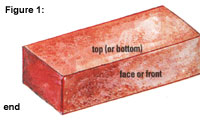 Figure 2: Laying the face this way is called stretchers or stretcher courses. Figure 4: Laying the top this way is called shinerrs or shiner courses. Figure 6: Laying the end this way is called headers or header courses. |
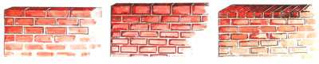 Figure 3: Laying the top this way is called soldiers or soldier courses. Figure 5: Laying the top this way is called sailors or sailor courses. Figure 7: Laying the end this way is called rowlocks or rowlock courses. |
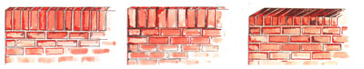 Figure 8: Brick wall laid in running bond. |
|
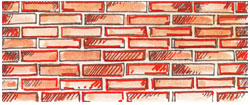 Figure 9: Masonry backup wall with brick ties |
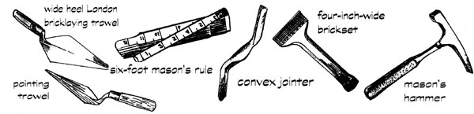 Figure 10: a non-masonry backup wall, showing brick ties nailed prior to veneering |
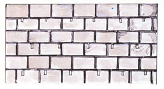 Figure 11: gap in joint proper joint |
|
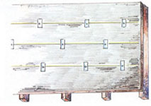 Figure 12: Buttering the end of the brick |
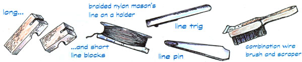 Figure 13: Using the modular rule. |
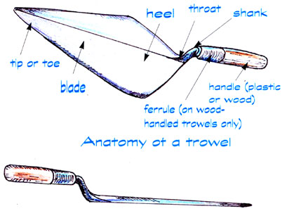 Figure 14: Line Block. Figure 15: Securing the line to a line range laying the layout course. |
|
Figure 16: ""Arisses"" on a brick. Figure 17: Brick leads on the layout course. |
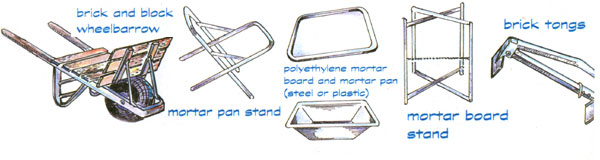 |
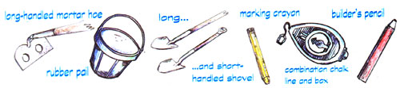 |
|
|
|
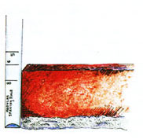 |
|
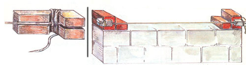 |
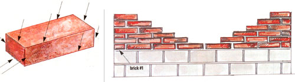 |
|